Service
-
初学者也能安心
全部计划（潜水的执照课程除外）也有指导员安装潜水装备。
除了第一次、或是不熟悉水肺潜水的人外，
已获得执照的人也可安心潜水。 -
安全的水肺潜水
在本店，每两位顾客就有一名指导员跟随。
即使是不熟悉水肺潜水的人也可以安心地享受潜水的乐趣。
而且，我们会根据客人的水平来提供适合客人的计划，请随时向我们查询。 -
提供中文服务
本店有多名会说中文的指导员。
从预订到潜水当天、只用中文也ＯＫ！
就算只会说中文也完全没问题！
指导员介绍

- 海野 浩二
- 冲绳县出身，成为介绍指导员已有十年，经验非常丰富。
除了日文以外也能使用中文指导。
更会细心指导初次接触水肺潜水的朋友！
Diving Points
除此以外还有很多不同的潜水景点。请随意查询。
-
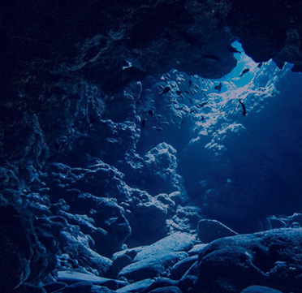
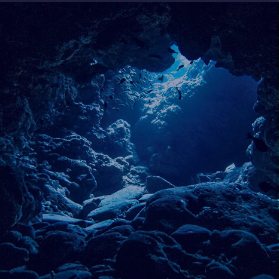
庆良间群岛
-
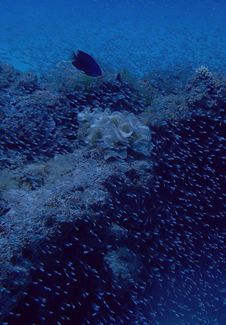
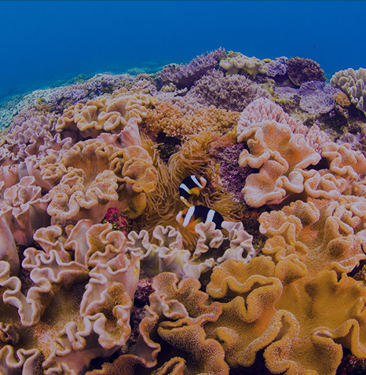
座间味岛
水納島
-
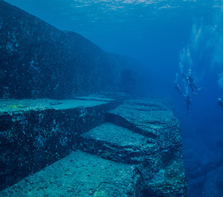
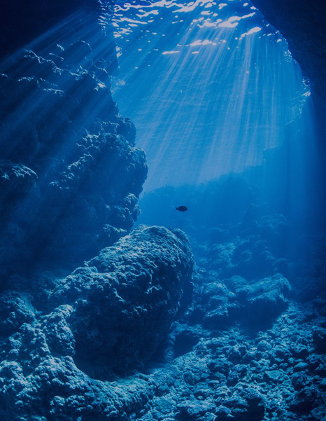
与那国岛
青之洞窟
-
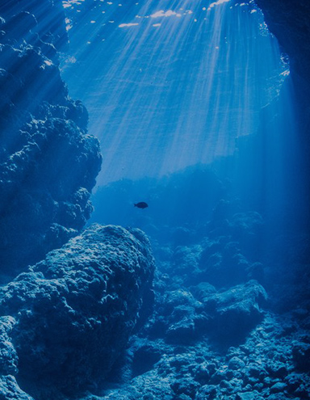
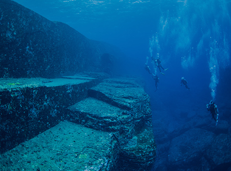
青之洞窟
与那国岛
-
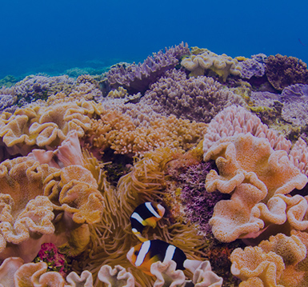
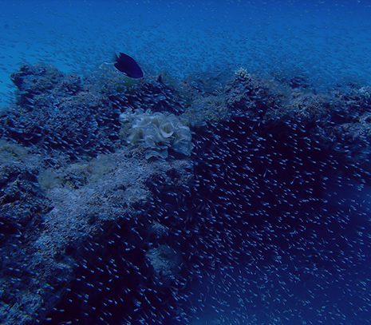
水納島
座间味岛
-
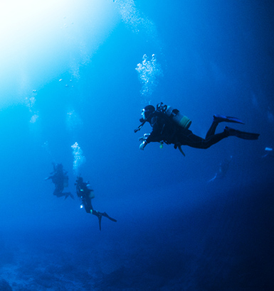
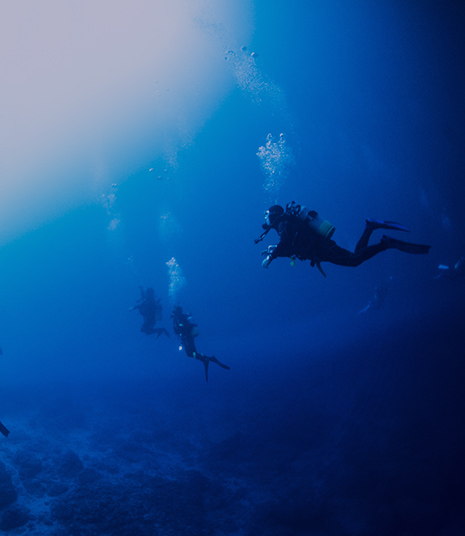
宫古岛
Corse
- 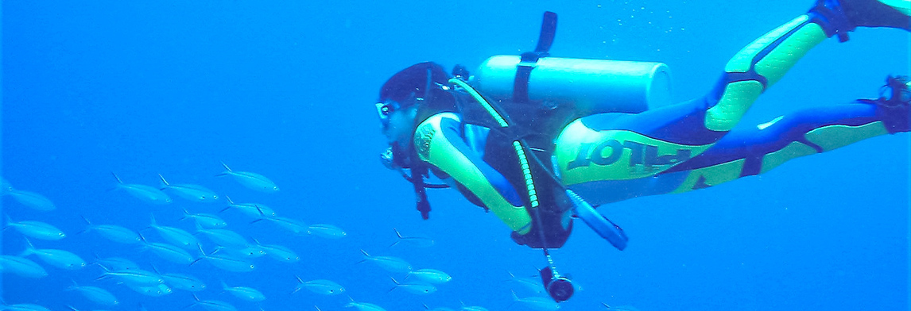
-
\ 初学者 /体验水肺潜水
- ¥19,800~
- 初学者也能放心。
客人会在能站稳脚跟的专用游泳池中练习后才进行潜水。
难得的冲绳海洋，只是看看便太可惜了！
预订